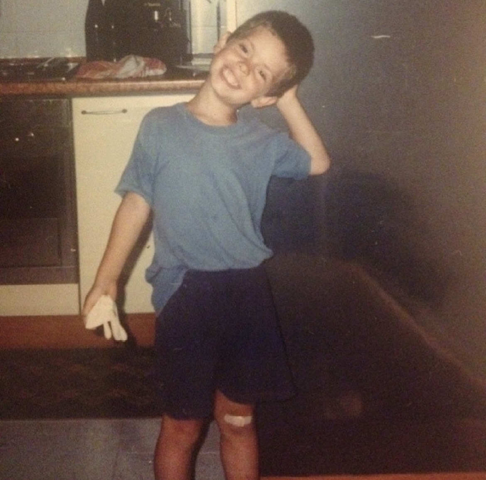
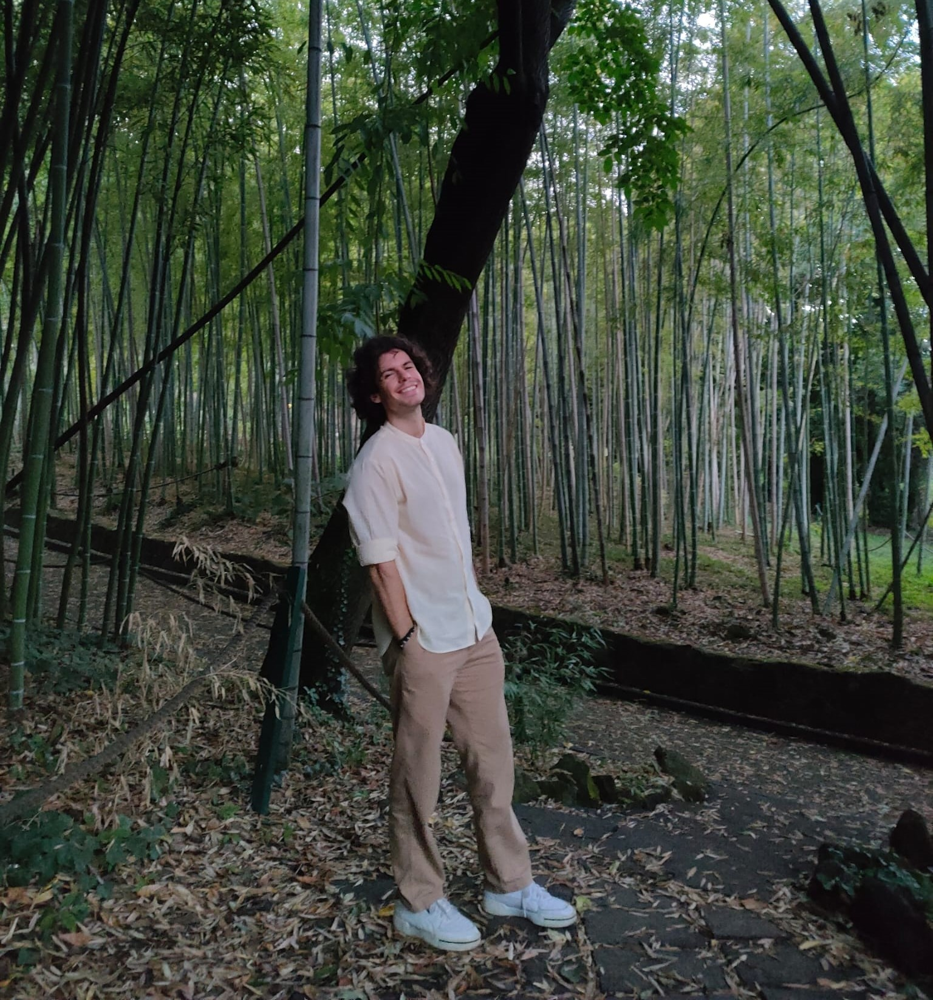

Get to Know Me
About me
Michael - A game designer that wants to make the difference
Why a Game Designer?
I have always believed that video games are the most powerful media available to human beings. By immersing the player directly into the experience, you can make concepts, ideologies and motivations understood at a deep level. This is what I felt directly on my skin.
Hi I'm Michael and I'm a game designer. If the child me could hear these words, he would jump for joy to know that he finally has the chance to be on the other side of the screen and let other people experience what he experienced.
Since my childhood I have been exposed to video games that have shaped the man I am today. I believe that playing RPGs and titles such as Kingdom hearts, Final Fantasy VIII, Zone of the Enders, Shadow of the Colossus, Onimusha and Drakengard as a child contributed positively to my emotional and personal growth.
Then growing up with titles like the Souls series and multiplayer titles like League of Legends, Team Fortress and Overwatch has further strengthened my character and taught me the inestimable value of patience and teamwork.
Today I tend towards strategic titles such as Civilization, Xcom, TCGs of any kind and games that carry the heavy burden of conveying a deeper message such as Death Stranding, Gris, Abzu, Nier: Automata and Persona 5.
It was probably this variety of genre and title that drove me to love the potential of the video game in its raw form, like clay, capable of being simple entertainment or life experience, and to want to become the sculptor who gives it a form.
Me beyond videogames
Beyond my love for videogames I am an avid consumer of every other media: books, mangas, anime, films, anything that can satisfy my curiosity and surprise me fuels me with joy. I also love tabletop games and always try to find the time to play a game or two to some of my favourites like Dominion and Root.
My passion for nature and animals pushes me to often go for a hike. Mental health and physical health often go together and I also give a lot of attention to my body too trying to go at the gym every time I can.
I love music and until recently I was part of a small rock band. I'm also trying to teach myself to play the piano. I'm a plant lover and I recently started to make terrariums in glass jars to create small green environments to look at during screen breaks.
My Studies
 Following my passion for videogames I thought that the best way to approach such world would be becoming a programmer, so I decided to enroll the university "La Sapienza" computer science course.
It was a very arduous journey where I often found myself thinking about giving up, but my final goal stood strong and I kept pushing for it. During the course I came across the Gamification and Game Design exam
which opened my eyes to the existence of a figure much more in line with my desire to understand and communicate with people.
Following my passion for videogames I thought that the best way to approach such world would be becoming a programmer, so I decided to enroll the university "La Sapienza" computer science course.
It was a very arduous journey where I often found myself thinking about giving up, but my final goal stood strong and I kept pushing for it. During the course I came across the Gamification and Game Design exam
which opened my eyes to the existence of a figure much more in line with my desire to understand and communicate with people.
I began to self-taught myself the discipline of game design, learning both the theory through books (like A Theory of Fun for Game Design by Raph Koster), podcasts (like Think Like a Game Designer by Justin Gary) and videos, and the practice by following online courses on Unity and Unreal. After obtaining my degree, I knew I had to deepen my knowledge in the game design and development process and I decided to enroll in the Game Design course provided by Digital Bros Game Academy and taught by Derek Hartin.
This experience allowed me to deepen my knowledge, create working relationships and lead team projects but above all it increased my love for Game Design.
My work Experience
In addition to the work experience gained working on projects you can find here, while studying at university I have also worked in the IT sector as a consultant.
During this experience I matured professionally and was immediately exposed to enterprise environments that allowed me to learn best practices and agile project management. As a middleware developer I interfaced with multidisciplinary back-end and front-end teams during the development of a specific tool for an important Italian beverage company. I followed all the agile practices as the project was managed following the SCRUM methodology and I held knowledge transfer meetings for the post release team. One of the applications I created was the topic for my thesis.
Thanks!
Thank you for reading through my portfolio! I hope you enjoyed the reading! If you want to know more about me and my work, below you can download my resume, contact me at the email address or on linkedin.